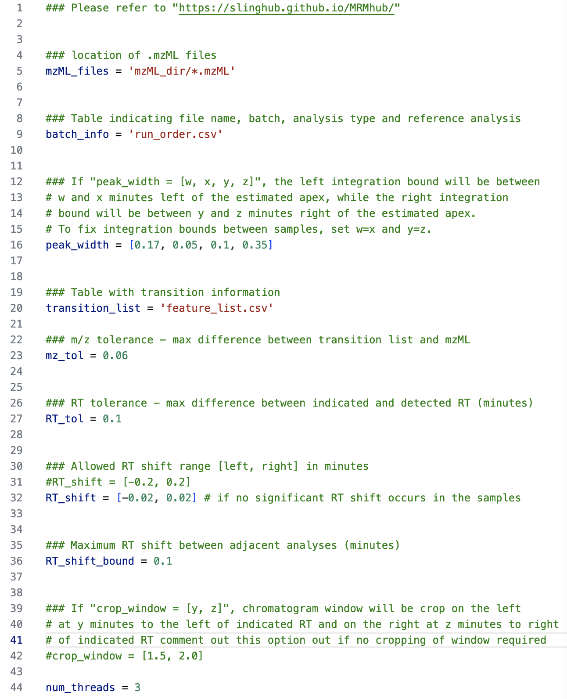
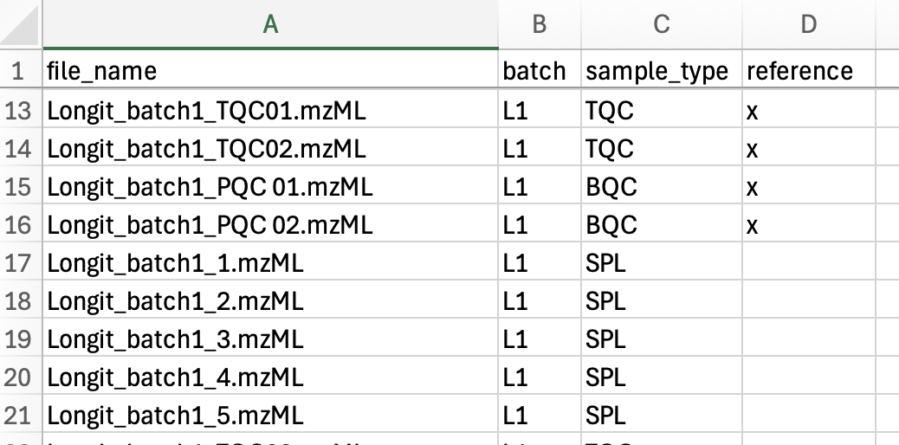
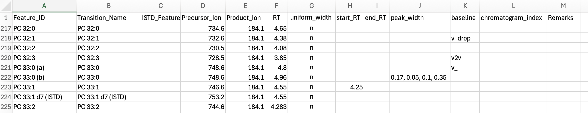

Input Files and Parameters
INTEGRATOR is configured through the following three input files, which specify the data to process, the features to integrate, and how peaks are detected and integrated. They form a complete, self-contained specification of a reproducible integration run.
| File | Configuration |
|---|---|
param.txt |
Names and locations of the input and mzML files, the global peak-detection and border-finding settings, and the RT-shift correction parameters. Must be in the same folder as the MRMhub executable. |
run_order.csv |
The mzML files to process, in run order, and optionally the reference sample(s) for RT-shift estimation. sample_type is optional; only blanks (BLK) are treated specially. |
feature_list.csv |
Transition precursor and product m/z, transition and feature identifiers, the expected RT, and optional per-feature integration settings. |
Each file is specified in detail below. See the Algorithm for how these settings drive detection and integration.
run_order.csv and feature_list.csv are read by matching the header row: columns may appear in any order, but each required column name below must be present exactly (matching is case-insensitive; avoid inserting spaces inside a name). A missing required column stops the run with a <name> column not found! error. param.txt is likewise read by name. Use the templates as a starting point.
Global parameters (param.txt)
param.txt (the name is fixed) holds the global parameters that direct INTEGRATOR to the input and data files and control peak detection and integration. It must reside in the same folder as the MRMhub executable.

param.txt file from an example lipidomics dataset| Parameter | Description |
|---|---|
mzML_files |
Folder containing the mzML files to integrate. Default: mzML. |
batch_info |
Sample-list file (see Sample list). Default: run_order.csv. |
transition_list |
Transition/feature-list file (see Transition / Feature list). Default: feature_list.csv. |
peak_width |
[w, x, y, z] set the allowed integration bounds: the left border falls w–x min and the right border y–z min from the apex. The most influential setting for difficult chromatograms — see Tuning Peak Integration. Default: [0.17, 0.05, 0.1, 0.35]. |
num_threads |
Number of CPU threads used for integration; affects speed only, not results. Default: 2. |
mz_tol |
Allowed deviation between the listed and detected m/z, in m/z units. Default: 0.06. |
RT_tol |
Allowed deviation between the listed and detected RT, in minutes; a key setting for complex chromatograms. Default: 0.1. |
RT_shift |
[x, y] bound the RT drift relative to the reference samples: at most x min earlier and y min later than expected. The lower bound is negative (earlier), the upper positive (later). [0.0, 0.0] disables RT-shift correction — but a small non-zero window is recommended even for stable methods, as it improves consistent border finding. Default: [-0.2, 0.2]. |
RT_shift_bound |
Maximum RT drift allowed between adjacent samples, in minutes. Default: 0.1. |
crop_window |
[y, z] crops the chromatogram to a window from y min before to z min after the listed RT. Default: [1.5, 2.0]. |
Start from the template defaults, then refine the global parameters above — and the per-feature overrides in feature_list.csv (below) — for individual difficult peaks. See Tuning Peak Integration for how each setting behaves and how to set it.
Sample list (run_order.csv)
The sample list defines the data files to process, in processing order (top to bottom). mzML files present in the data folder but not listed here are ignored. Required columns are shown in bold.

| Column | Description |
|---|---|
| file_name | mzML file to process, located in the folder set by mzML_files. Must include the .mzML extension (exact case). |
| batch | Analysis batch identifier. No effect inside INTEGRATOR; carried through to the result. |
| sample_type | Sample/QC type. Blanks must be labelled with text containing BLK — the only label INTEGRATOR treats specially (during peak finding). Every other label has no effect inside INTEGRATOR, may be left empty, and is carried through to long.csv for the QUANT module. Using the standard MRMhub QC types here lets QUANT assign the QC roles automatically. |
| reference | Marks a sample as a retention-time reference for RT-shift estimation; label with x, otherwise leave empty. Multiple references must exhibit negligible RT shifts relative to one another. |
| learn | Optional column. Marks a sample as a learning sample, this column allow user to select a subset of sample that will be considered for the detection of consensus peaks. |
Transition / Feature list (feature_list.csv)
The transition/feature list specifies the transitions to process and the features to integrate for each. Transitions present in the mzML files but not listed here are ignored. Multiple features may be defined for one transition. Required columns are shown in bold.

| Column | Description |
|---|---|
| Feature_ID | Feature (analyte) identifier. Unique, typically identifying a single peak. |
| Transition_Name | Transition identifier. May be repeated across features sharing one transition. |
| ISTD_Feature_ID | Internal standard assigned to the feature. No function inside INTEGRATOR; carried to the result and read by QUANT. If set, must match a defined Compound Name; may be empty. |
| Precursor_Ion | Precursor-ion m/z. Must match the mzML value within mz_tol. |
| Product_Ion | Product-ion m/z. Must match the mzML value within mz_tol. |
| RT | Expected retention time of the feature, in minutes, read from a sample marked as a reference (see the caution below). |
| uniform_width | If y, the integration width is held constant across samples (set to the median of the automatically determined borders); if n, borders are found per sample. Default: n. |
| start_RT | Fixed left peak border for all samples, in minutes, read from and tracked relative to the reference sample (see the caution below). Empty = determined automatically. |
| end_RT | Fixed right peak border for all samples, in minutes, read from and tracked relative to the reference sample (see the caution below). Empty = determined automatically. |
| peak_width | Per-feature override of the global peak_width, entered without the brackets as w, x, y, z (see Tuning Peak Integration). Empty = use the global value. |
| baseline | default: horizontal line at the 5th percentile of intensities within the window; v_drop: horizontal line at the lowest intensity of the integrated region; v2v: straight line connecting the left and right bounds. Default: default. |
| chromatogram_index | Optional column. Overrides the automatic assignment of chromatograms to transitions. Empty = assigned automatically. |
| Remarks | Free-text documentation of integration settings; no function. |
The RT and any fixed start_RT/end_RT are interpreted in the retention-time frame of the reference sample(s) (run_order.csv, reference = x) and tracked from there into every sample. Read these values from a reference sample: a value taken from a non-reference sample that has drifted relative to the reference carries that offset into the whole sequence, shifting the integration throughout.
See also
- FAQ & Troubleshooting — spreadsheet pitfalls, validation errors, and common integration problems.
- Tuning Peak Integration — choosing
peak_widthand integration bounds for difficult peaks. - Processing Workflow — the four processing steps that consume these files.
- Peak-detection algorithm — how these settings drive detection and integration.